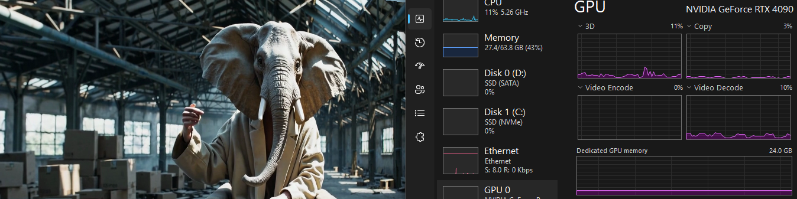
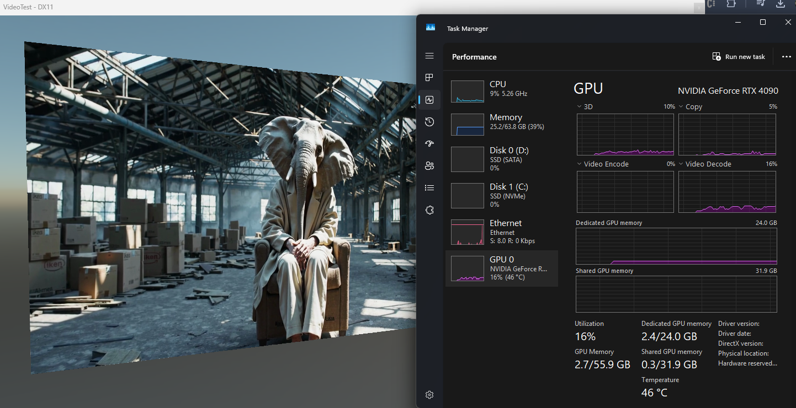
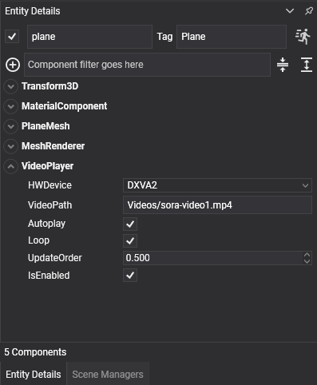

Evergine.Runtimes.Videos

The Evergine.Runtimes.Videos NuGet package provides a powerful and efficient solution for loading and playing videos at runtime in your projects.
Built on FFmpeg
FFmpeg is an industry-leading multimedia framework capable of decoding, encoding, transcoding, muxing, demuxing, streaming, filtering, and playing virtually any multimedia format. Recognized for its efficiency and versatility, FFmpeg delivers robust, optimized performance across various hardware and software environments.
Built upon FFmpeg, the Evergine.Runtimes.Videos library has been rigorously tested with common video formats such as:
- MP4 (H.264)
- WMV
- MOV
- FLV
Additionally, this runtime supports both CPU-based and GPU-accelerated decoding, significantly reducing decoding time and enabling simultaneous playback of multiple high-resolution videos without performance degradation.
GPU-Accelerated Decoding
The following illustration demonstrates Evergine’s video runtime operating on a Windows platform configured with GPU-accelerated decoding via the DXVA2 standard:

Note: Video example provided by OpenAI's Sora.
While video support in this release is currently limited to Windows x64, this functionality will be extended to support additional platforms in future updates.
Getting Started
To integrate this powerful runtime into your project, install the Evergine.Runtimes.Videos NuGet package and utilize the new VideoPlayer component available within Evergine Studio:

VideoPlayer Component
The VideoPlayer component includes various properties that allow flexible control over video playback.
Component Properties
| Property | Description |
|---|---|
| HWDevice | Determines the decoding system used. None means CPU decoding, while other options enable GPU decoding. (Default GPU system on Windows platforms: DXVA2) |
| VideoPath | Specifies the file path within the Content folder of your project. |
| AutoPlay | Automatically starts video playback when the application launches. |
| Loop | Enables infinite video looping. |
The VideoPlayer component automatically retrieves the Material from the MaterialComponent of your entity and sets the video texture as the baseColorTexture in the Standard Effect shader.
If your entity does not have a MaterialComponent or you are using a custom shader, you can directly access the VideoTexture public property to handle it as needed.
Runtime Properties
The following properties of the VideoPlayer component can be accessed via code:
| Property | Description |
|---|---|
| VideoTexture | The GPU texture where the video will be rendered. |
| VideoWidth | The width of the video texture. |
| VideoHeight | The height of the video texture. |
| VideoState | Indicates the current video playback state. Available values: Stopped, Playing, Paused. |
Events
Additionally, the VideoPlayer component includes three events that can be subscribed to:
- Playing → Triggered when video playback starts.
- Paused → Triggered when video playback is paused.
- Stopped → Triggered when the video stops playing.